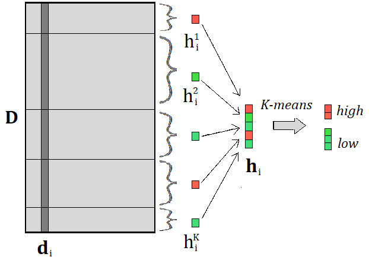
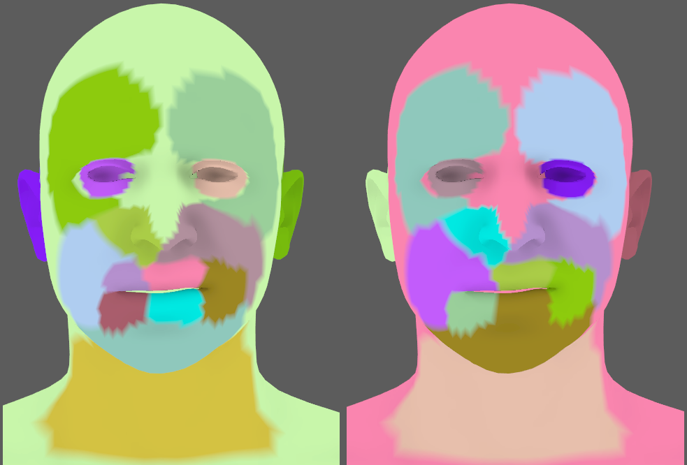
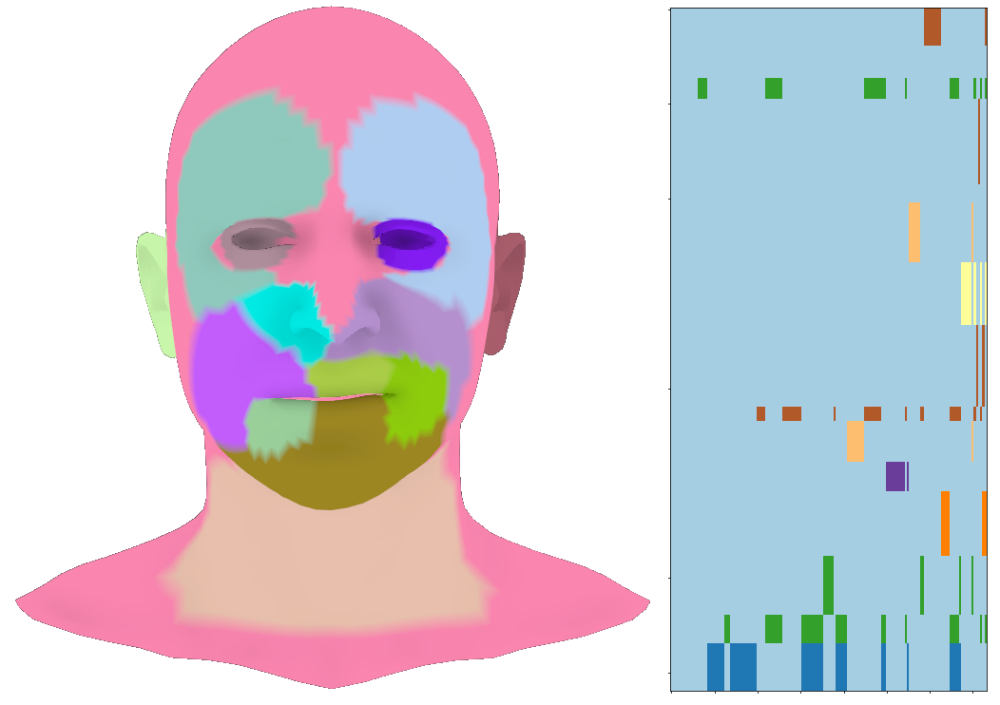

Clustering of the Blendshape Facial Model

We proposed a novel method for clustering the face in a blendshape animation. The algorithm employs two=fold clustering, segmenting the face in both a mesh space and a controller space. There are two essential points to mention about this method:
- The goal that we had in mind for the obtained clusters is a distributed solving of the inverse rig problem;
- The clustering method is based exclusively on the blendshape basis, hence it doesn't depend on an animation data, only on the underlying space of motion of a character

Now that we have mesh clusters, it is time to visit controllers. We know that blendshapes have local influence, and this is why we don't want to use, e.g., a controller for the left ear in the inverse rig estimation over the mesh cluster corresponding to the right brow. The figure above shows that the controllers are assigned to the mesh clusters where they seem relevant. The columns of \(\textbf{D}\) are split into subvectors (according to mesh clusters). Only the average values of each subvector are computed and extracted (in the figure, those values are denoted with h). In this sense, vectors \(\textbf{d}\) are 'compressed' into new vectors \(\textbf{h}\), whose values represent an average magnitude of the change, i.e., the importance of a given blendshape per cluster. Now K-means is performed again but over a single vector \(\textbf{h}\). This one-dimensional clustering will, in fact, be similar to a threshold split, and separate the values into high and low. Now, a visited blendshape is assigned to each mesh cluster where its activation value was classified as 'high'.
Clearly, some of the controllers will be assigned to more than one cluster. With a moderate number of clusters K, this will, in general, be tolerable. However, if the number of clusters is too high, an overlap of the controller sets between some pairs of clusters can be huge, and it is better to merge the two clusters. For this reason, we include an additional parameter \(p\in\[0,1]\) - a tolerance of the overlap, i.e., if the percentage of the overlap in controller sets is above the given value p, the clusters are merged. This works as a sort of a regularizer on the number of clusters K, and allows to initially set a larger value. In the figure below, we see how the two pairs of clusters in the mouth region are merged, and instead of 18, we end up with 16 clusters.

Finally, when the clusters are produced, each one is observed as a separate sub-model of the face, and the learning model is trained for each one (in parallel) to estimate the corresponding weights. In the paper, we later average the values of those controllers that appear in more than one segment, but it might be interesting (and beneficial) to try to model a better approach for estimating the shared weights. The savings in computational memory compared to a non-clustered setting are immense. Look at the bottom-most figure. On the left, we see a segmented mesh with 16 clusters, where the pink one consists of inactive vertices, and it doesn't have any assigned weights. That means we can remove those vertices from the start, which is already a reduction of almost one third. Then on the right, we see the sub-matrix of a blendshape matrix, with vertices that correspond to non-empty clusters. All the entries colored light blue will be omitted, as our method uses only the colored submatrices. And yet, even despite this reduction of the size (or actually, thanks to it), we obtained higher accuracy of the fit when estimating the animation weights.

For a detailed derivation of the algorithm and presentation of the experimental results, check our paper.